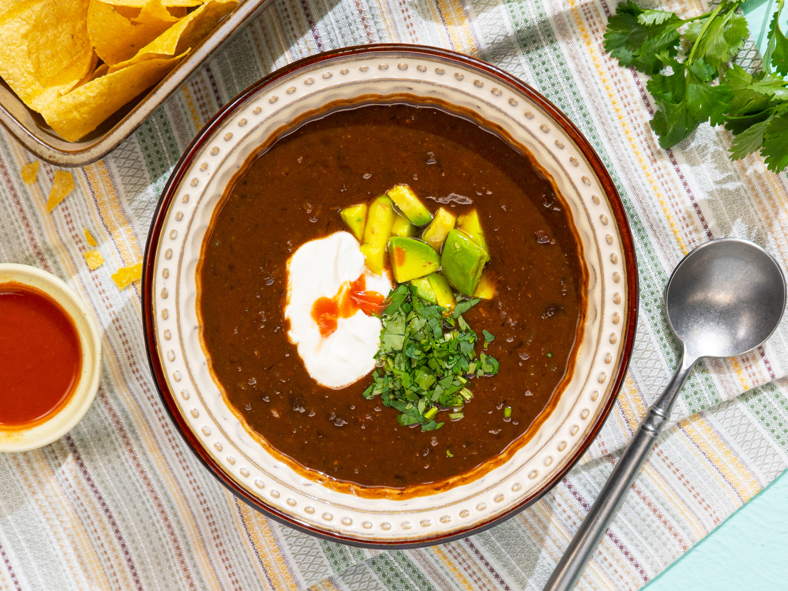

20-Minute Black Bean Soup

Description
When you don't feel like cooking, this is the recipe for you. You can get a warm, filling, perfectly-spiced bowl of soup on the table in 20 minutes, 1 pot, and very minimal
effort. A little garlic and an onion, some tomato paste, broth, and ground cumin are all you need to turn a few cans of black beans into your new favorite busy weeknight meal.
Ingredients
- 2 Tbsp olive oil
- 1 medium yellow onion, diced
- 3 cloves garlic, minced
- 1/4 cup tomato paste
- 1 tsp ground cumin
- 3 15 oz cans black beans (2 cans with liquid, 1 can drained)
- 2 cups vegetable broth
Garnish
- Chopped fresh cilantro
- Sour cream
- Hot sauce
- Diced avocado
Steps
- In a large pot, heat olive oil over medium-high heat. Add yellow onion and garlic and cook for 2-3 minutes, until the onions are turning translucent.
- Add tomato paste and ground cumin. Cook, stirring for 1-2 more minutes.
- Add black beans and vegetable broth. Bring to a boil then lower to a simmer and cook for 10 minutes (up to 30 for deeper flavor), stirring occasionally.
- Use an immersion blender to puree the soup a few times. You don't want to completely blend the soup, just thicken it up. You can also pour 1 cup into a blender and puree it,
then return it to the pot.
- Serve garnished to taste with sour cream, fresh cilantro, avocado, and a dash of hot sauce. May also be served with tortilla chips.